Resorts Website Redesign
Responsive website redesign for better search & navigation
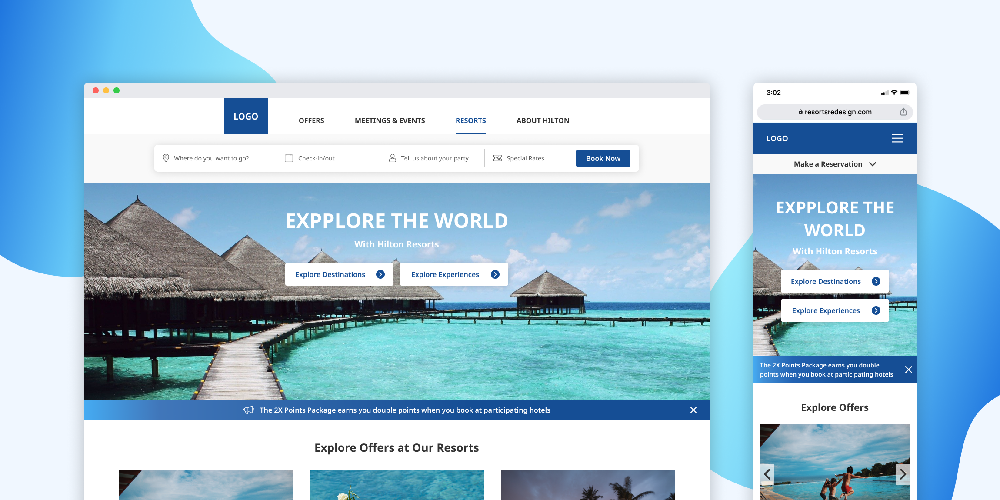
Team: 3-member Team Project @ Sparks Grove Internship
Duration: Jun 2017 - Aug 2017 (8 Weeks)
Tools & Methods: Sketch, InVision, Survey Monkey, Agile
My Role: UX Design, UI Design, Usability Testing
Overview
Problem
The resorts website acts as a portal for site visitors to explore and browse all the resorts options within our client’s brand. Typical site visitors usually naviagte the site without a pre-determined destination. So how can we use design to engage users in the luxury vacation experiences, and ultimately convert ‘lookers’ to ‘bookers’?
Scope
The project scope includes redesigning the landing page of the desktop website, and launching a responsive mobile website that wasn't existing.
Key Tasks
- Product: Enhance the search and navigation functionality of the landing page.
- Business: Make the path to purchase easier for the customer.
- Branding: Utilize imagery to highlight main content and high-priority information.
Design Outcomes
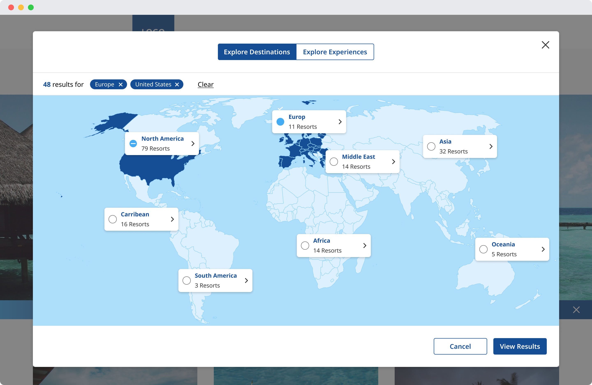
Explore by Destinations
Click on the interactive map to select the destinations that you are interested in. Using the world map to encourage site visitors exploring and dreaming the vacation experiences.
Explore by Experiences
The image gallery provides a visually pleasing way to filter down the reorts you are interested in. Utilize imagery to create an "inviting feel" for site visitors.
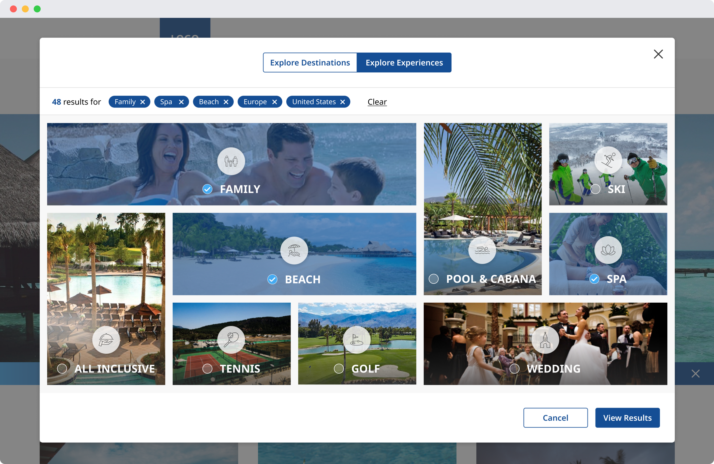
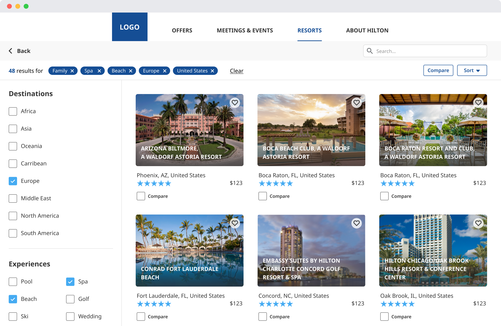
Search & Filter
Added the advanced filter feature to make the site more funtional and practical. Easier to find and book the prefect resort vacation.
Comparision Tool
Make the path to purchase easier by adding the comparision tool and help site visitors to make the decision. Ratings and reviews help site visitors to get a sense of "real people" with "real experiences" at the resorts.
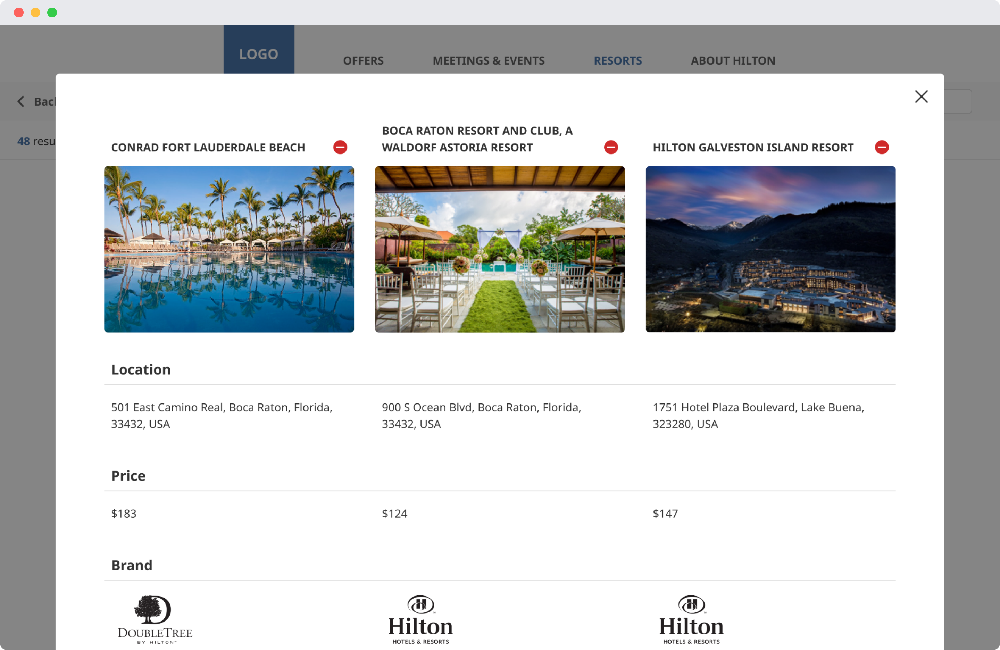
Our Approach
We utilized Agile methodology with several iterations to refine our deliverables. The team meets daily for morning stand-ups to discuss the tasks needed to be done on that day. At the end of each week, we presented our clients with a Demo of what we’ve been working on, ask for our client’s feedback, and discuss what we plan to do for the following week.
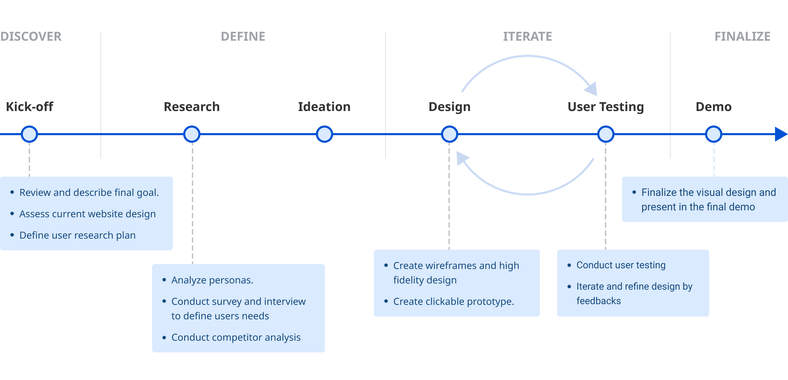
Research
Every design targets at an audience. The first thing we did after given the task is to specify the users we should design for and to know them and their goals.
Identify Users' Needs
Based on the Based on the given project brief, we summarized to 3 personas to guide us in the design of our resorts website.
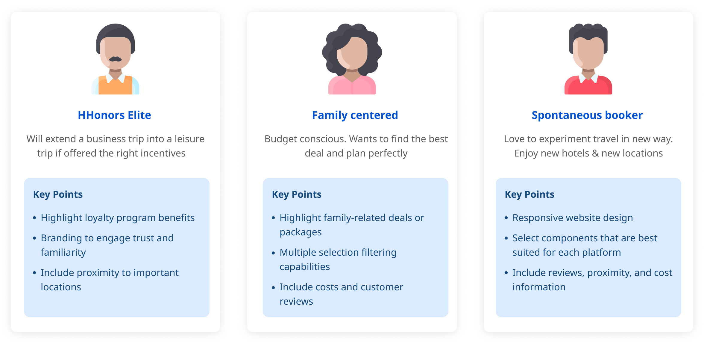
What are users looking for when navigating in a resorts website?
To understand more about the difficulties faced and types of information people look for on a resorts website, we sent out a survey internally to our fellow coworkers. From the 26 responses we received, we drew important information to help us prioritize the content and features to be shown on our website.
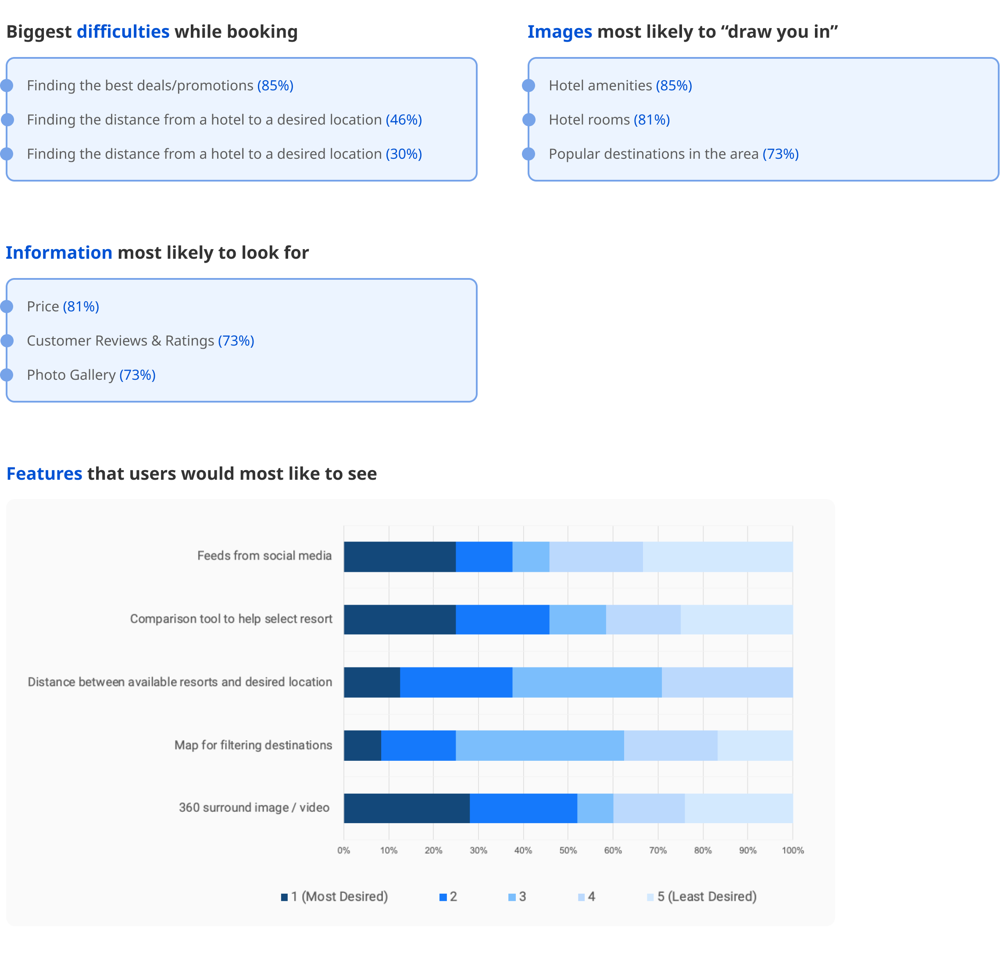
Audit the previous design
For a better understanding of the current landscape, we conducted a digital assessment of our client’s website based on the following criteria:
What can be improved on the previous design?
To further analyze the usability and functionality of the current website, we conducted 5 testing sessions to identify problems and gain data on what our participants likes and would like to see on the website
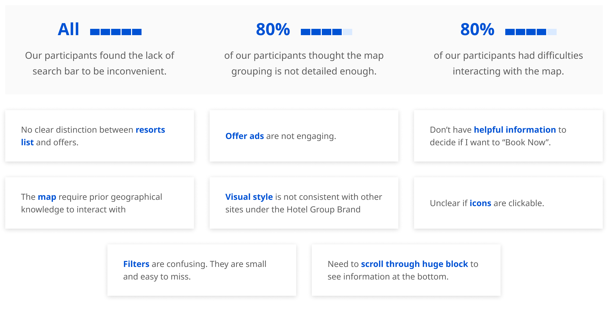
Key Takeaways
Improve search and navigation functionality
- Make filters & results clearly visible to users
- Reduce the need to scroll to see important information
Improve the map interaction
- Clickable regions
- Zooming in on selected areas
- Use color codes/layers to provide more information
Add CTAs and shortcuts for convenience
- Add search bar
- Add booking widget + "Book Now"
Engage users into the exploring experience
- Engaging images & 360 images/videos
- Travel reviews and tips
Ideation
Inspirations
We utilized the same criteria to assess a few other competitor sites to analyze areas in which other websites are doing well and potential features that we could include. We also researched current technological trends such as 360 images and user-generated content. Lastly, we created an inspiration board to help consolidate the findings from our assessments.
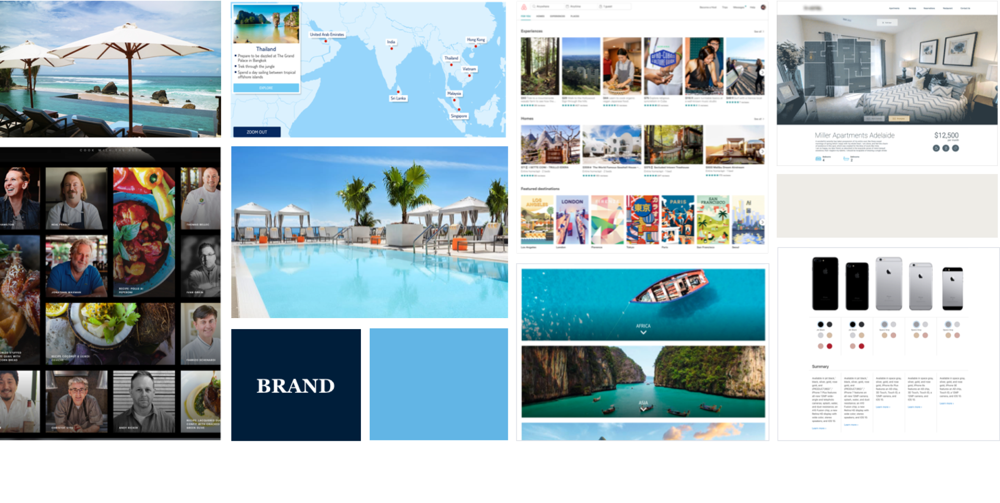
Brainstorm
We created initial hand-drawn sketches for ideation based off insights from our user research and strategy.
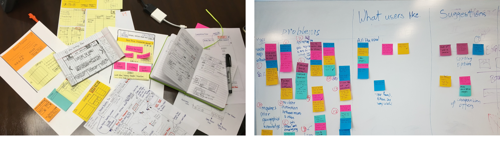
Get Feedbacks
We shared these design ideas with our supervisors and clients. We received great feedbacks on the design of filters and map navigation. They thought it was a great idea to insprire site visitors to explore resorts and experience, as well as help site visitors to drill down and find the resort meet their needs. They also loved the design idea of comparision tool and showcase customer reviews, because they inspire new customers and bring together the community.
Design
Our Process
In each iteration, we created the design, conducted user tests, and consulted with experts from the UX team, Creative team, and Strategy team. We then refined our deliverables according to the feedback we received.
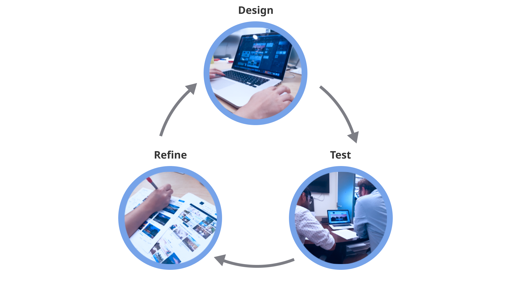
User Flow
We studied the current user flow of the website and analyzed how this flow could be improved.
Our ultimate goal is for the user is to either:
- “Learn More” to be redirected to the individual resort’s website.
- “Book Now” to be redirected to the resorts booking portal.
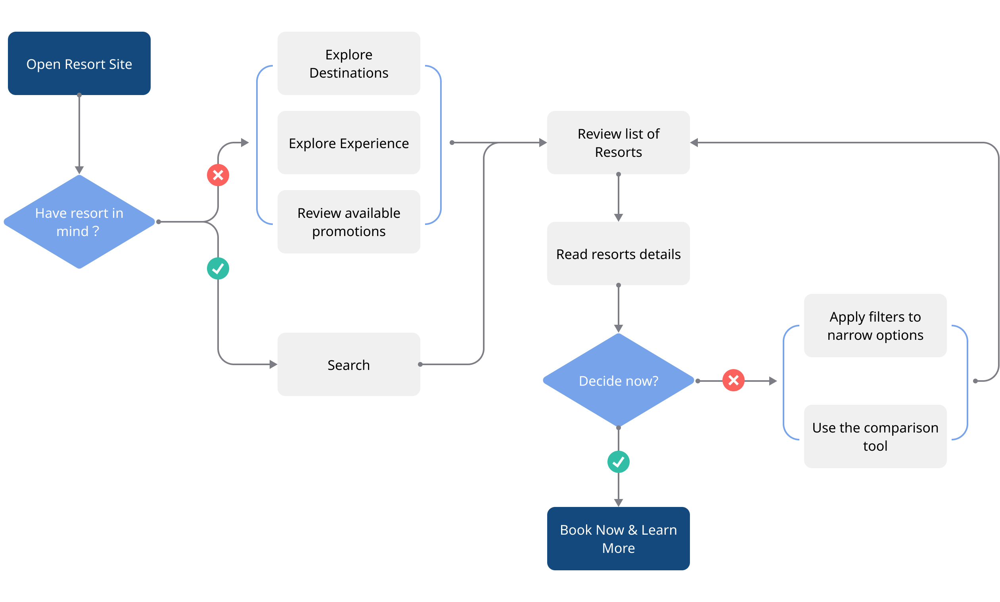
Desktop Design
We decided to first design the main flow that applies to both desktop and moible devices. To do it, we created the page flow on the desktop scale because it was easier to make design decisions with an existing desktop version as reference. Then, we will replicate the flow on the mobile design with reasonable variation specifically tailored to moible experience. Below was our first iteration of desktop wireframe.
How to encourage users to exlpore?
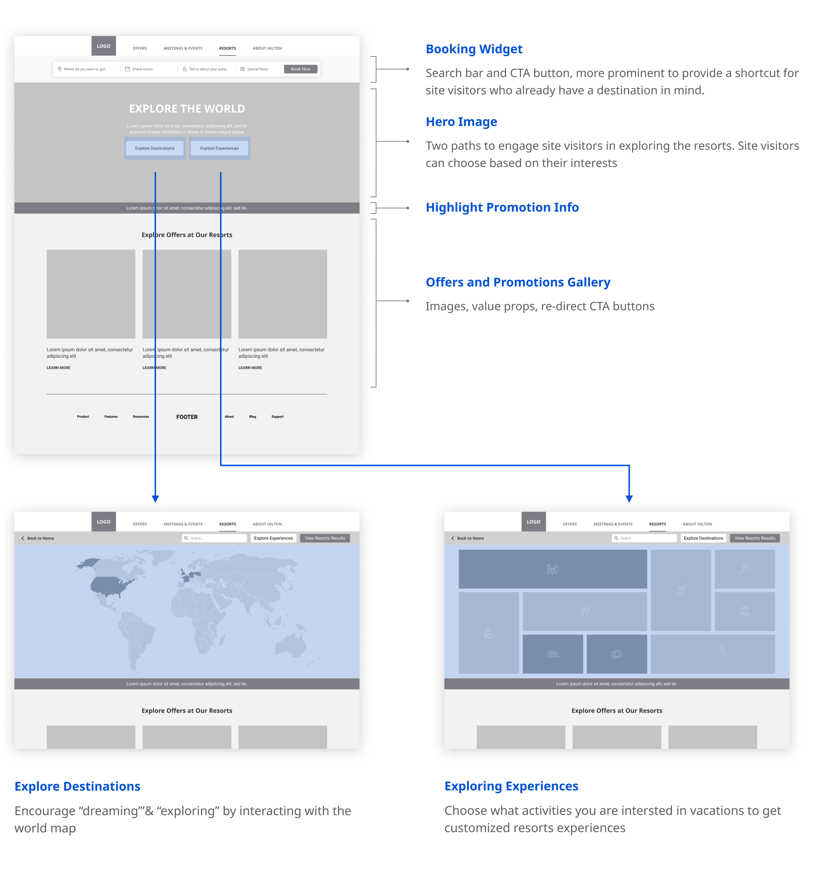
How to convert "looker" to "booker"?
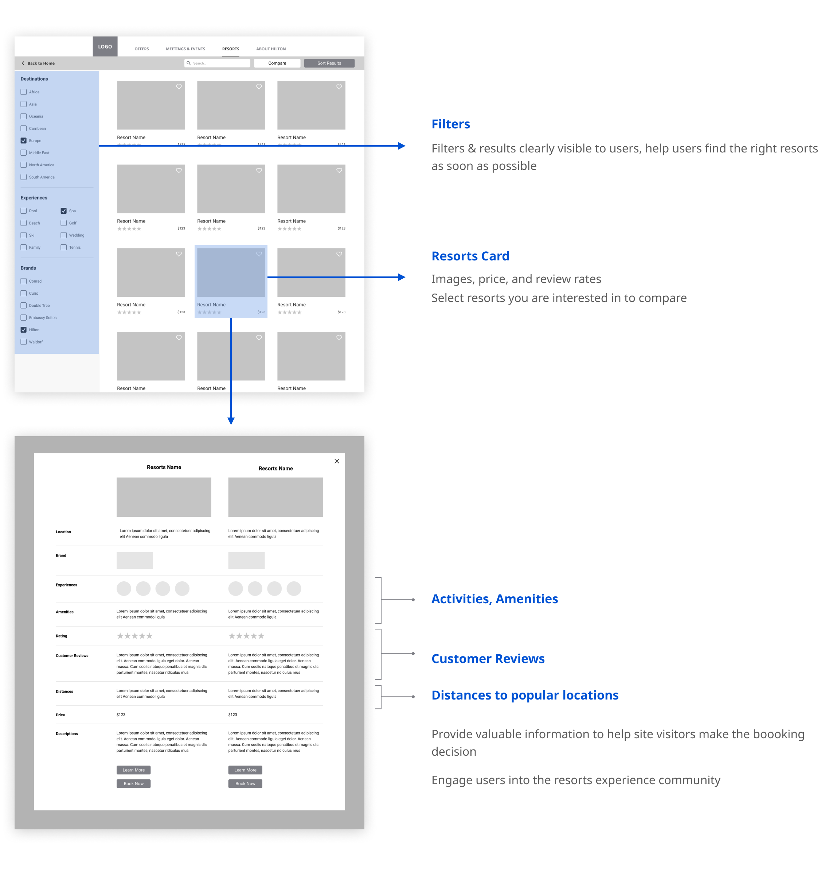
Mobile Design
One big difference between the mobile and desktop website is how users interact with the interface. On the desktop webiste, users are familiar with hover interaction and are more willing to use their mouses to click around. However, on the mobile device, people almost only want to scroll.As a result, contents hidden in the folded menu almost never get a chance to be viewed. Because of that, we made design changes as below:
Utilize a list instead of a map on the mobile version.
This allows for easy selection while providing a comprehensive list of destinations. The map requires large screen space and complicates that interaction.
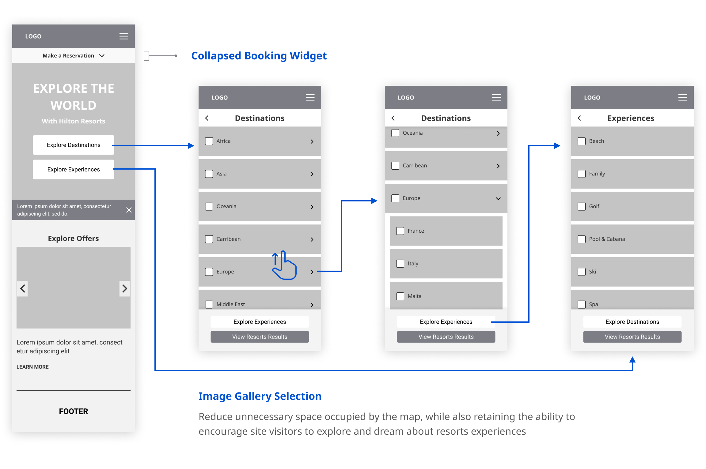
Remove the comparison feature from the mobile version.
The majority of our participants said they would not use this feature on mobile because they are merely "browsing through the options". They would refer to the desktop for more important, detailed decisions.
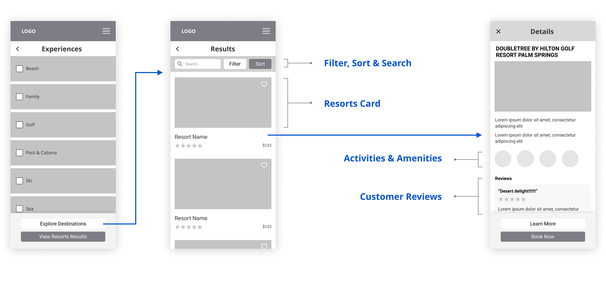
Hign Fidelity Design
After having our wireframes, we reviewed with clients, and get feedbacks from other designers inside the company. Digested all those feedbacks, we created visual components based on our client’s branding, icons, and style guide.
Desktop Version
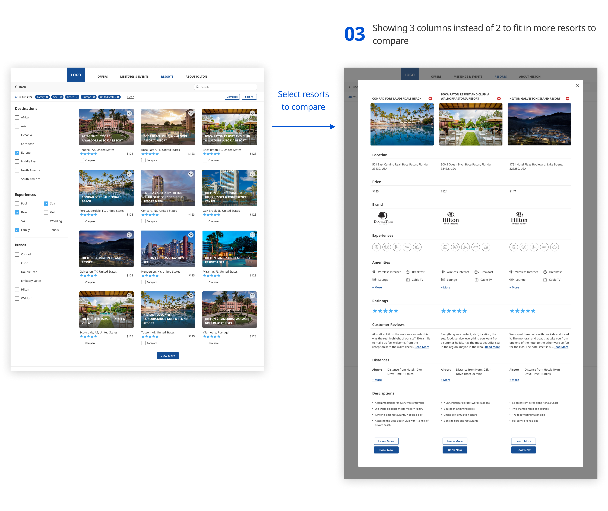
Mobile Version
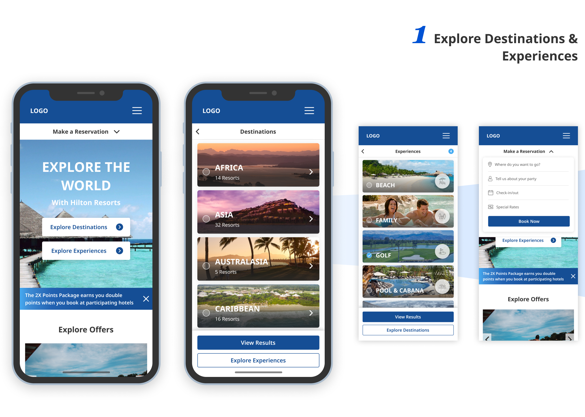
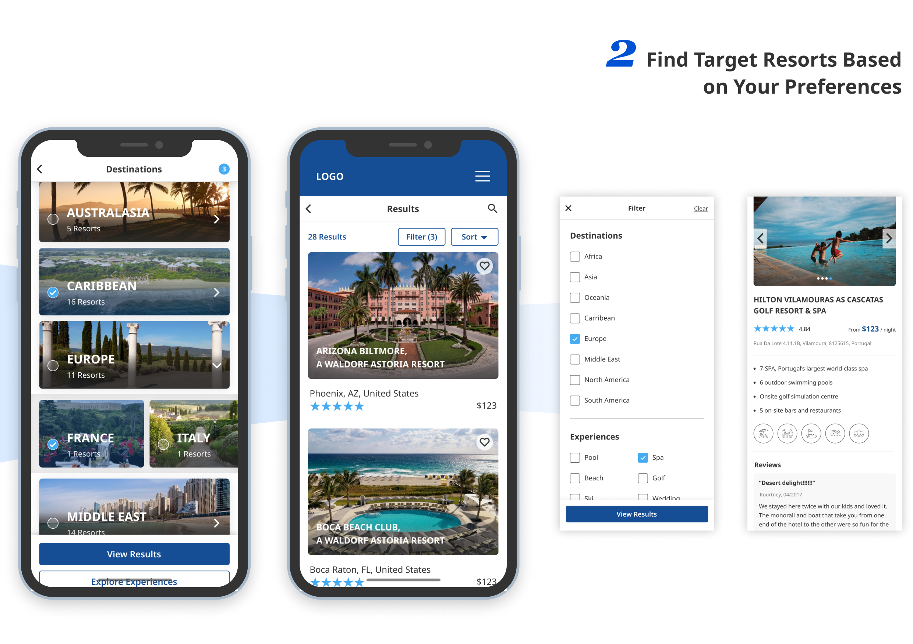
Evaluation
After creating the finalized version of our prototype, we conducted user tests on both the current and new designs to benchmark several usability ratings. The most significant increases in the ratings demonstrates an enhanced usability of the website (the ability to complete tasks, availability of expected functions, and convenient booking experience).
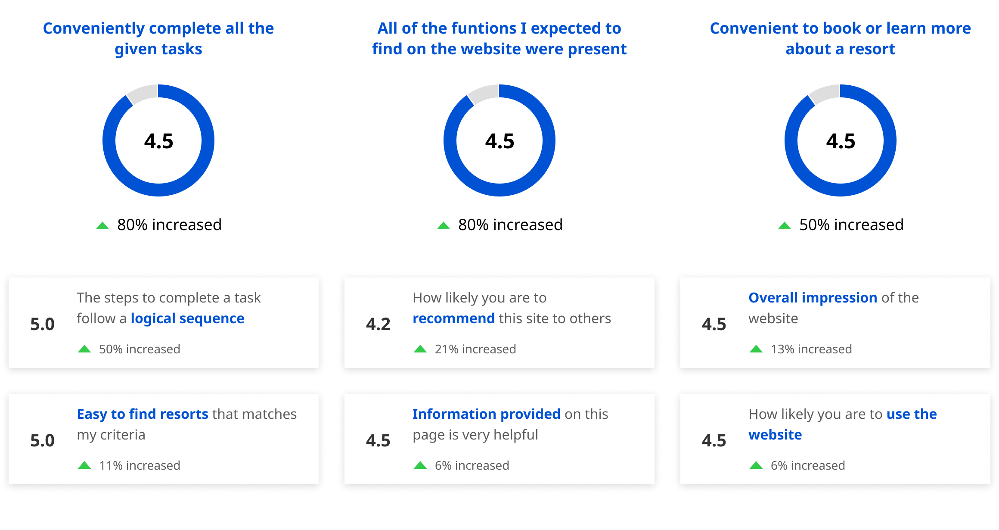
Looking Forward
To conclude our redesign project, we proposed a long term Road Map for further enhancements of the website— including several features that could be included to better support the user tasks.
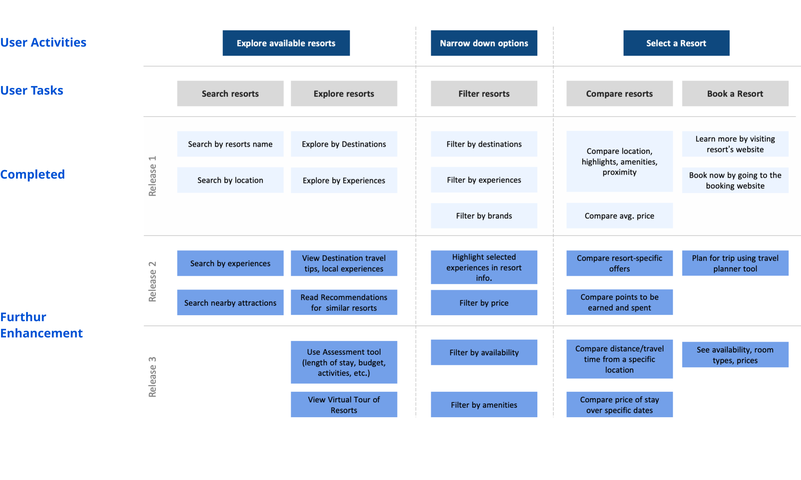